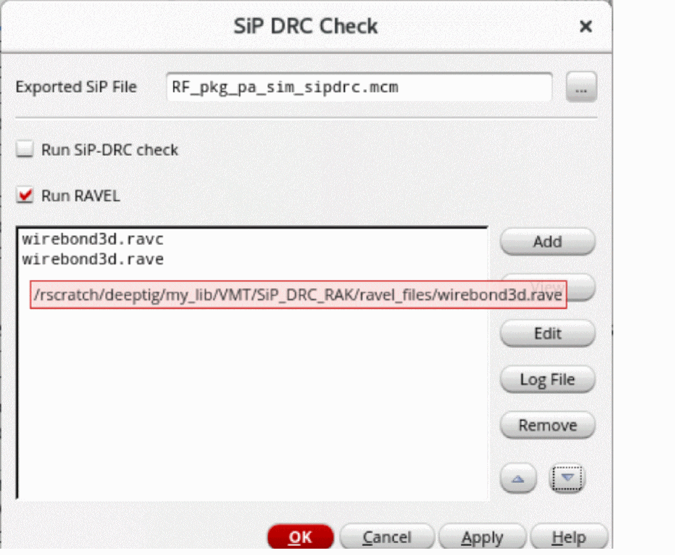
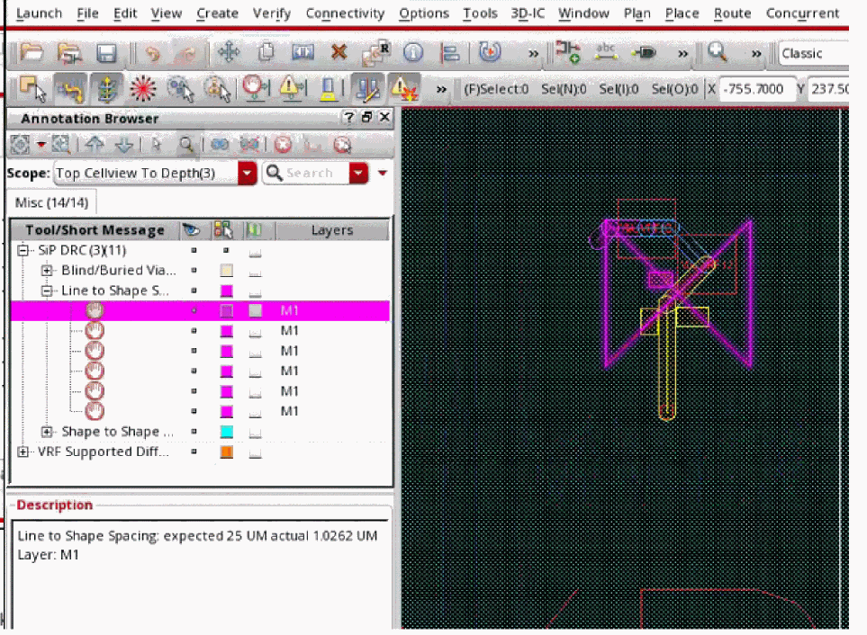

Performing DRC Checks in Virtuoso RF Solution
You can check package layout in Virtuoso RF Solution using the same SiP-DRC checker engine as in SiP Layout Option and view violation markers in the Annotation Browser without having to leave Virtuoso Studio.
To perform design rules checks:
-
Click Module – SiP DRC Check.
The SiP DRC Check Form opens.
 - Specify the SiP file to be exported from the Virtuoso RF Solution.
-
Select the types of checks, SiP DRC or RAVEL, to be performed on the SiP file. When you specify RAVEL files with long names, the form resizes to show the complete name. You can also view the path of files in the tooltip and the CIW. Multiple files can be added from the same location because the last accessed path is recognized.
Multiple RAVEL files can be specified in the SiP-DRC Check form. Use the following one of the three or more methods to define multiple files:-
Provide multiple
.ravcin the SiP-DRC GUI. When the run is complete, all the violations related to the .ravc files are shown in the Annotation Browser and through canvas markers. -
Provide multiple
.ravc+.ravefiles in the following combination:
file1.ravc,file1.rave,file2.ravc,file2.rave -
This ensures in determining the pairs of
.ravcand.raveand avoiding any order-specific error. When the run is complete, all the violations related to combination files are shown in the Annotation Browser and through canvas markers. -
Provide multiple source code (.rav) files.
When the run is complete, all the violations related to the .rav files are shown in the Annotation Browser and through canvas markers.
-
Provide multiple
-
Click OK.
The markers in the layout window and the Misc tab of the Annotation Browser are shown.

Related Topics
Updating a Virtuoso Layout From a SiP File
Return to top